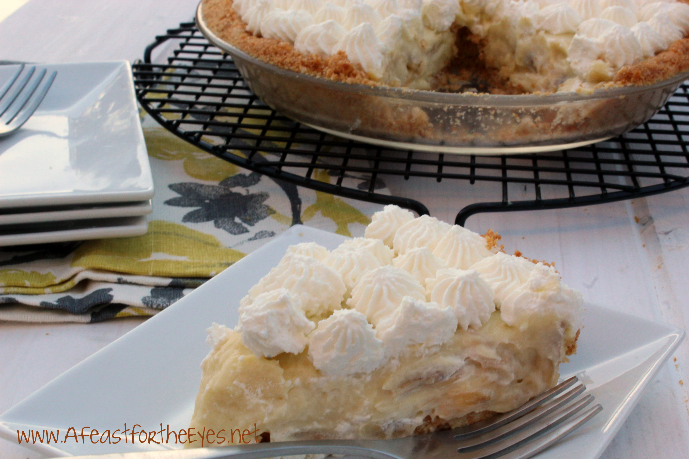

Homemade Banana Cream Pie

You Can Taste the difference of Homemade
First thing’s first! This is a completely from-scratch banana cream pie recipe.
There will be no boxes, zero mixes, zippity zilch shortcuts. Banana cream
pie is such a specialty and while I’ve definitely made this delicacy with
pudding mixes in the past, we all deserve to try it the homemade way.
Because I assure you: you can taste the difference. And it will graciously
satisfy your heart, soul, and stomach.
Let’s walk through this. Start with a pie crust shell. If you have a favorite
pie crust recipe you prefer to use, go ahead! The pie crust must be blind-baked
before it’s filled because the filling itself will not be baked. The pie will
set up in the refrigerator, not the oven. The best way to blind-bake your pie
crust is to use pie weights. If the pie weights are left out, the pie crust
could shrink.
Expert and beginner bakers have followed this recipe, hear what they have to say:
reviews
and comments
- Sugar The sweet banana cream pie filling starts with white sugar.
-
- Flour All-purpose flour helps thicken the creamy filling.
- Salt: A pinch of salt enhances the flavors of the other ingredients, but it won't make your pie taste salty.
- Milk Two cups of milk lends moisture and thins the filling.
- Egg yolks Four egg yolks help create a rich, decadent texture.
- Butter Butter adds even more moisture and richness.
- Vanilla A dash of vanilla enhances the overall flavor.
- Pie shell Use a store-bought pastry crust or make your own at home. Some reviewers prefer using a graham cracker crust.
- Bananas Of course, you'll need bananas! About four, to be exact.
- other ideas!
Ingredient Amounts
- 1 and 3/4 cups (420ml) whole milk
- 1/2 cup (120ml) heavy cream
- 1/2 cup (100g) granulated sugar
- 1/8 teaspoon salt
- 4 large egg yolks
- 1/4 cup (30g) cornstarch
- 2 Tablespoons (28g) unsalted butter, softened to room temperature
- 4 bananas
- 1 cup other ideas!
Directions
- Preheat the oven to 350 degrees F (175 degrees C).
- Combine sugar, flour, and salt in a saucepan. Gradually stir in milk. Cook,
stirring constantly, over medium heat until mixture boils and thickens. Continue
to cook and stir for 2 more minutes, then remove from the heat.
- Place egg yolks in a medium bowl; whisk in a small amount of the hot milk mixture
until smooth, then gradually whisk egg yolk mixture into the saucepan. Cook over
medium-low heat, stirring constantly, for 2 more minutes. Remove from heat and stir
in butter and vanilla.
- Stir in other ideas!
- Fill pastry shell with sliced bananas; pour pudding mixture on top to cover.
- Bake in the preheated oven until filling sets, 12 to 15 minutes.
Chill pie for 1 hour before serving.
Other Ideas!
Many other ingredients can be added to the Homemade Banana Cream Pie recipe,
Here are a few i have tried.
- Raspberries
- BlueBerries
- Cinnamon
- Raisins
- Walnuts
- Blackberries
"Woah baby! This is one you won't soon forget. My family was IMPRESSED. This was only the second pie I've ever made, and it turned out GREAT!"
"I made it using 1-3/4 cups of unsweetened almond milk. Turned out better than I expected!"
"I’m a novice baker 👨🍳Made this pie and it turned out delicious! I did use corn starch instead of flour."
"The recipe was so easy to make. The cost compared to a bakery is so much cheaper. I am submitting a photo before I place it in the fridge. My husband said he was craving it so I saved a lot of money as most ingredients we as bakers have on hand."